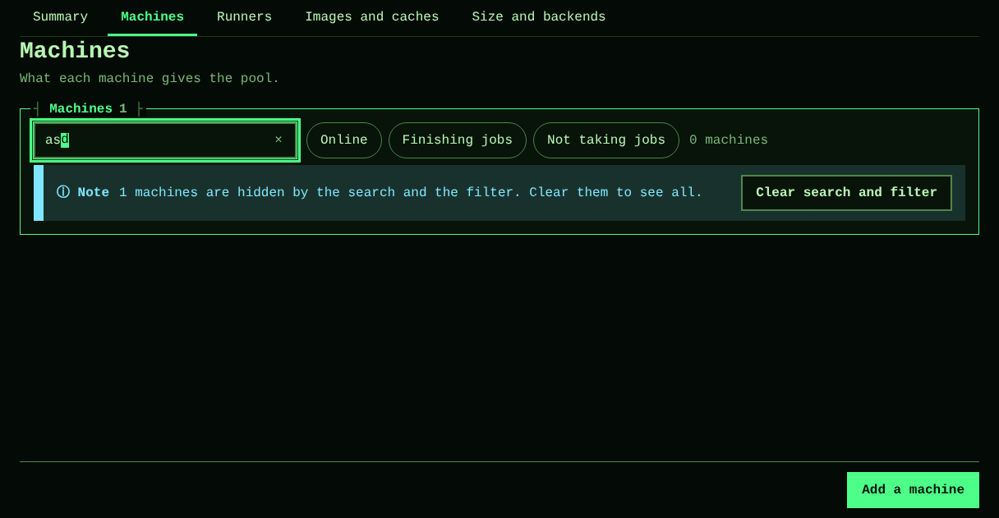
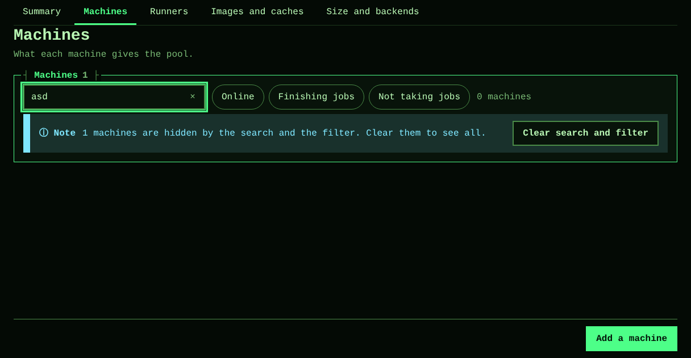
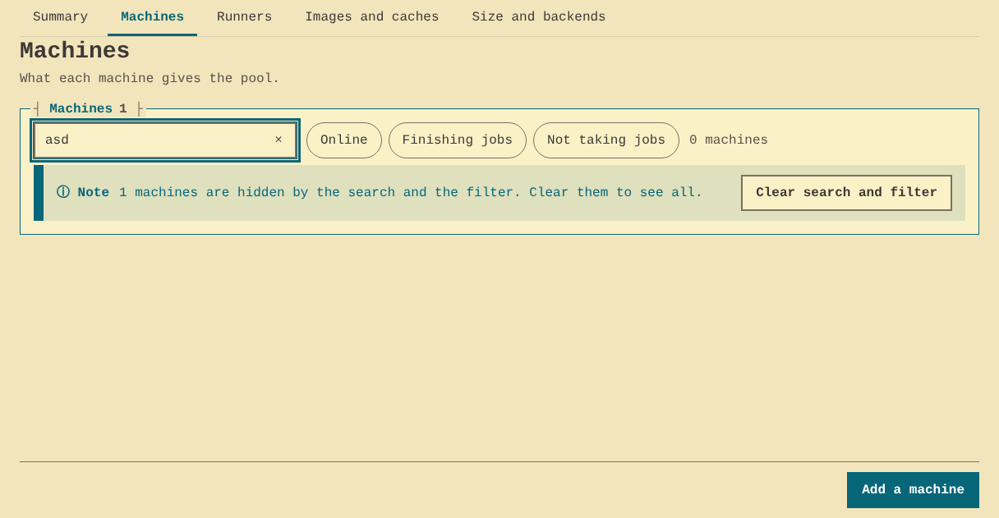
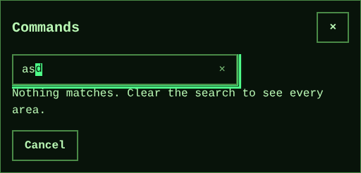
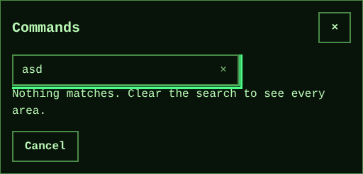
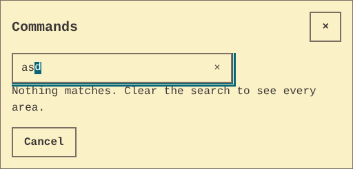
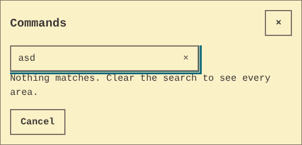

The Machines search and the command palette, focused, with "asd" typed and the caret moved one place left, so the block sits on the "d" and shows it inverted. Each pair is the two phases of the blink: on and off. Phosphor dark is the default theme; Gruvbox light is the light example.






